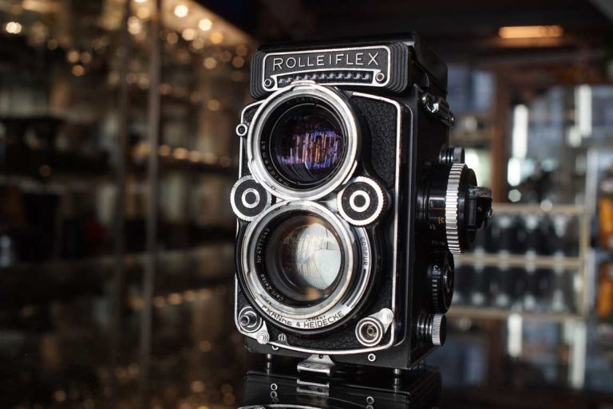

The Vault of Optics
Hover and inspect classic cameras crafted to capture living history.

Leica M3 • 1954
The Silver Rangefinder
Renowned for its luminous 0.91x viewfinder and legendary mechanical shutter tolerances.
Summicron 50mm f/2
Hasselblad 500C • 1957
The Lunar Format
Medium format perfection. The iconic square frame that documented the quietest wilderness horizons.
Planar 80mm f/2.8
Rolleiflex 2.8F • 1960
Twin Lens Reflex
Waist-level perspective offering intimate encounters with forest floors and shadowed canopies.
Xenotar 80mm f/2.8